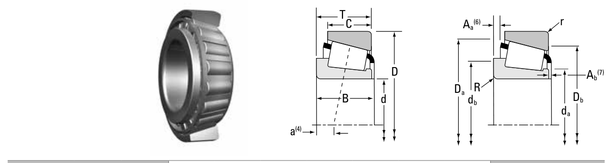

Original catalogue drawing - Timken TRB Catalog, page 406

Scanned from the manufacturer catalogue page listing this part number. All part numbers printed on that table share the same drawing.
Scale cross-section
Blue = inner / outer ring, yellow = rolling element. Drawn to scale from this part's own
dimensions for selection reference only - not a manufacturing or assembly drawing.
Dimension table (mm / inch)
Symbol
Dimension
mm
inch
d
Bore diameter
60
2.3622
D
Outside diameter
110
4.3307
B
Inner-ring / bearing width
38
1.4961
T
Overall assembly width
38
1.4961
C
Cup / outer-ring width
29
1.1417
r
Chamfer (min)
1.5
0.0591
Notes
Weights are given in kg. Load ratings are shown in both the original catalogue units and the converted value (1 N = 0.2248 lbf). Data is provided for selection reference only - confirm against the latest official catalogue before ordering.
Main dimensions
Bore d (mm)
60.000
Bore d (in)
2.3622
Outside dia. D (mm)
110.000
Outside dia. D (in)
4.3307
Width B (mm)
38.000
Overall width T (mm)
38.000
Overall width T (in)
1.4961
Cup width C (mm)
29.000
Load ratings & speeds
Basic dynamic load rating Cr (lbs)
44400
Basic static load rating Cor (lbs)
56800
Basic dynamic load rating Cr (N)
198000
Basic static load rating C0r (N)
253000
Dynamic rating C1 (N, ISO)
198000
Dynamic rating C1 (lbf, ISO)
44400
Radial rating C90 (N)
51200
Radial rating C90 (lbf)
11500
Thrust rating Ca90 (N)
35500
Thrust rating Ca90 (lbf)
7970
Static rating C0 (N)
253000
Static rating C0 (lbf)
56800
Factor e
0.40
Factor Y
1.48
Factor K
1.44
Geometry factor G1
76.2
Geometry factor G2
20.0
Geometry factor Cg
0.0758
Effective load centre a (mm)
-9.9
Weight
Weight (kg)
1.53
Mounting dimensions (fillets / shoulders)
Shaft fillet R max (mm)
2.0
Housing fillet r max (mm)
1.5
Shaft shoulder da (mm)
68.0
Shaft shoulder db (mm)
74.0
Housing shoulder Da (mm)
105.0
Housing shoulder Db (mm)
98.0
Cage projection Aa (mm)
3.9
Cage projection Ab (mm)
2.5
Bearing life (ISO 281 basic rating life)
C / P
Equivalent load P (N)
L10 (106 rev)
L10h at 500 rpm
4
49,500
102
3,386
6
33,000
392
13,083
8
24,750
1,024
34,133
10
19,800
2,154
71,814
15
13,200
8,323
277,449
Basic rating life per ISO 281: L10 = (C/P)10/3 with C = 198,000 N. Hours = L10 x 106 / (60n). Life-modification factors for lubrication, contamination and temperature (aISO) are not included.
Source & traceability
Brand
Timken
Source catalogue
Timken Tapered Roller Bearing Catalog (2016)
Catalogue page
p.406 (dimensions)
Series type
TS
ISO dynamic rating C1, Timken C90 / Ca90, static rating C0, geometry factors and assembly weight.
Send us the quantity you need and we will come back with price and
lead time, normally within 24 hours. Equivalent parts from other brands can be quoted at the same time.